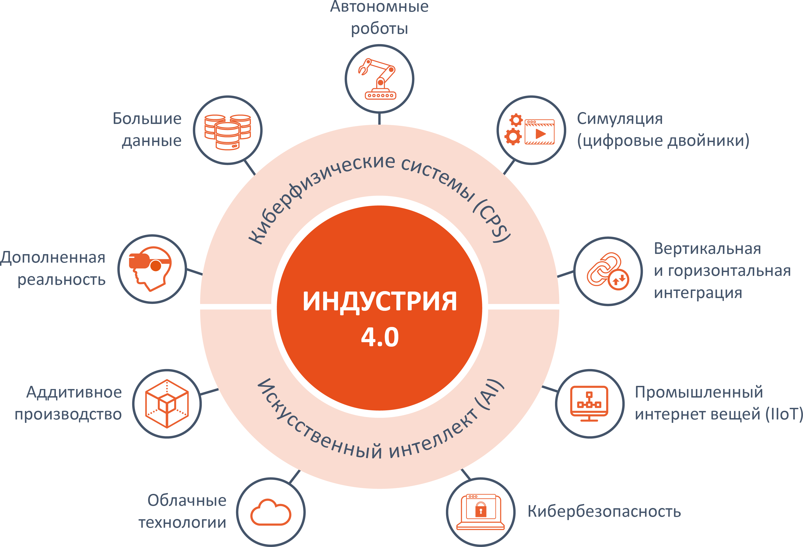

Введение
В технологическом плане 2025 год в России характеризуется устойчивым курсом на развитие отечественных решений. Ключевыми трендами остаются искусственный интеллект, облачные технологии, контейнеризация и активное импортозамещение в сфере ПО. Несмотря на уверенный рост отрасли, по итогам первого полугодия 2025 года он составил 15% [1]. Отмечается замедление темпов, ожидаемый годовой рост снизился до 10% из-за финансовых и кадровых ограничений [2].
В социальном контексте цифровизация в России превратилась в системный процесс, влияющий на все сферы жизни, от госуправления до повседневного быта [3]. Однако вместе с позитивными изменениями, такими как рост доступности цифровых сервисов и внедрение успешных практик по всей стране, усиливаются и риски: цифровое неравенство, угрозы приватности и зависимость от новых технологий [4].
При этом цифровая трансформация всё больше воспринимается не как вынужденная мера, а как основа новой национальной модели развития.
Понятие "цифровой экономики" и тренды
Понятие «цифровой экономики» в глобальном масштабе описывает экономическую систему, в которой ключевые процессы — производство, распределение, обмен и потребление — основаны на цифровых технологиях, данных и сетевой инфраструктуре. Это не просто сектор ИТ, а трансформация всей экономики: от бизнес-моделей до государственного управления и повседневной жизни граждан. По оценкам, к концу 2025 года глобальная цифровая экономика достигнет 26,7 трлн долларов США, составив около 25% мирового ВВП [5].
Главные тренды 2025 года включают гиперавтоматизацию на основе ИИ, распространение блокчейн-экономики и Web3, цифровизацию критической инфраструктуры и стремительное развитие цифровых государственных сервисов [6]. Особое внимание уделяется защите критически важных объектов (энергетика, транспорт, финансы, здравоохранение), где внедряются интеллектуальные системы мониторинга, автоматизации и кибербезопасности. Роль ИТ здесь центральная: они обеспечивают не только цифровую инфраструктуру (облачные платформы, дата-центры, 5G/6G), но и становятся основой для принятия решений в реальном времени, управления рисками и обеспечения устойчивости систем. Без развитых ИТ-решений невозможно обеспечить ни эффективность, ни безопасность цифровой экономики в глобальном масштабе [7].
Индустрия 4.0
Индустрия 4.0 – это концепция четвёртой промышленной революции, основанная на глубокой интеграции цифровых, физических и биологических технологий в производственные процессы, что позволяет создавать «умные фабрики» с высокой степенью автоматизации, гибкости и взаимодействия в реальном времени. Ключевыми ИТ-технологиями, определяющими развитие Индустрии 4.0 в 2025 году, являются промышленный интернет вещей (IIoT), искусственный интеллект и машинное обучение, цифровые двойники, Big Data и аналитика, облачные и edge-вычисления, 5G/6G-сети, дополненная и виртуальная реальность (AR, VR), кибербезопасность и блокчейн [8].

Схематическое представление Индустрии 4.0
Web 3.0 новое поколение интернета
Web 3.0 – это новое поколение интернета, в котором контроль над данными и цифровой идентичностью возвращается пользователю, а не сосредоточен в руках крупных централизованных платформ [9]. Он строится на принципах децентрализации, прозрачности и безопасности, обеспечиваемых с помощью распределённых технологий [10].
Ключевые технологические тренды Web 3.0 включают: блокчейн как распределённую базу данных, искусственный интеллект и семантический поиск, интернет вещей (IoT) и токенизацию (NFT).
Направления развития ИТ в концепции Web 3.0
Web 3.0 – это не просто технологическое обновление интернета, а фундаментальная переориентация его архитектуры: от клиент-серверной модели с централизованными посредниками к сети равноправных участников, где данные, логика приложений и ценность существуют в распределённой, криптографически защищённой среде [10]. Эта концепция возникла как ответ на монополизацию цифрового пространства, утечки данных и отсутствие прозрачности в Web 2.0. В Web 3.0 пользователь перестаёт быть «продуктом» платформ и становится владельцем своего цифрового следа, а приложения работают не на серверах корпораций, а на децентрализованных узлах, управляемых сообществом или алгоритмами [11].
С точки зрения развития ИТ, Web 3.0 опирается на совокупность взаимодополняющих технологий. Ключевую роль играет блокчейн, выступающий в качестве доверенной распределённой инфраструктуры для хранения данных и исполнения смарт-контрактов [12]. Важными компонентами также являются семантический веб, позволяющий машинам понимать смысл информации, и искусственный интеллект, обеспечивающий персонализацию и автономное принятие решений [13].
Из всех перечисленных направлений в этой работе подробно рассматривается децентрализация хранения данных — её преимущества и ограничения.
- Облачные вычисления
- Семантический веб
- Блокчейн
- Метавселенные
- ИИ и машинное обучение
- Граничные вычисления
- Децентрализованные сети
- 3D-визуализация
- Децентрализованное хранение
- Открытость и переосмысление владения данными
- Токенизация
- Электронная коммерция и криптовалюты
- Децентрализованные финансы (DeFi)
- Децентрализованные автономные организации (DAOs)
- Децентрализованные приложения (dApps)
- VR, AR, MR
- Вездесущая связность (5G/6G, IoT)
Децентрализованное хранение данных
Децентрализованное хранение — это хранение данных на нескольких компьютерах, или нодах, подключенных к одноранговой (P2P) сети, такой как BitTorrent или протокол Межпланетной файловой системы (IPFS). Данные, загруженные в децентрализованную систему хранения, разбиваются на небольшие фрагменты и распределяются по нескольким нодам. Если пользователю нужно получить файл данных, сеть собирает разделенные компоненты с отдельных нод и снова объединяет их в доступный для скачивания файл [14].
Децентрализованное хранение позволяет устранить некоторые проблемы, присущие централизованному методу хранения. Во-первых, оно обеспечивает повышенную устойчивость и отказоустойчивость, поскольку данные распределяются по множеству географически распределённых узлов в пиринговой (P2P) сети, что исключает единую точку отказа и делает систему более резистентной к сбоям и атакам. Во-вторых, децентрализованное хранение усиливает безопасность и приватность: файлы обычно шифруются и фрагментируются перед распределением, а блокчейн-технологии обеспечивают защиту от несанкционированного доступа и манипуляций.
 Фрагментирование и распределение данных в сетях IPFS/BitTorrent
Фрагментирование и распределение данных в сетях IPFS/BitTorrent
Кроме того, такой подход часто оказывается более экономичным, так как использует свободные ресурсы независимых участников сети вместо дорогостоящей инфраструктуры крупных провайдеров, и обеспечивает глобальную доступность данных при наличии интернет-соединения. Вместе с тем, децентрализованное хранение обладает и недостатками: задержки при восстановлении данных из множества узлов, отсутствие централизованной поддержки при утере ключей, юридическая неопределённость и слабая зрелость некоторых экосистем и интерфейсов.
Практический кейс: хранилище данных для научных исследований
Пример: проект X использует IPFS для хранения данных наблюдений метеостанций, распределяя фрагменты по узлам и подтверждая целостность через блокчейн [11].
IT-направления в туризме
На 2025 год туристическая отрасль находится в состоянии глубокой цифровой трансформации, обусловленной как восстановлением после пандемии, так и ускорением внедрения новых технологий. Цифровизация стала не просто трендом, а необходимостью для развития в отрасли. Современные путешественники всё чаще используют цифровые сервисы на всех этапах – от поиска и планирования до бронирования и оценки опыта. При этом растёт спрос на персонализированные и авторские туры, событийный туризм и гибридные форматы, такие как bleisure (сочетание бизнес- и досуговых поездок) [15].
Глобальный рынок туристических технологий, по прогнозам, к 2027 году может достичь $13 млрд, что подчёркивает стратегическую роль ИТ в отрасли [16]. Ключевыми ИТ-технологиями, оказывающими наибольшее влияние на развитие туризма, являются: искусственный интеллект, мобильные технологии, аналитика больших данных, облачные платформы и персонализированные сервисы, основанные на данных.
AI и персонализация в туризме
К ключевым ИТ-технологиям, оказывающим наибольшее влияние на развитие туризма, относятся:
- Искусственный интеллект — используется в чат-ботах, генерации маршрутов и персонализации; генеративный ИИ помогает путешественникам планировать поездки и подбирать варианты.
- Мобильные технологии и прямые продажи — большинство бронирований совершается с мобильных устройств; это стимулирует развитие мобильных приложений и бесшовной оплаты.
- Аналитика больших данных — сбор и анализ данных о поведении пользователей и геолокациях позволяют оптимизировать спрос и персонализировать предложения [18].
- Облачные технологии и SaaS — малый и средний бизнес в туризме активно переходит на облачные платформы для CRM, систем бронирования и аналтики [19].
Заключение
Анализ современного состояния информационных технологий показывает, что они перестали быть просто инструментом поддержки бизнеса и превратились в фундаментальную основу экономики, общества и культуры. Концепции цифровой экономики, Индустрии 4.0 и Web 3.0 отражают разные грани одного процесса, глубокой интеграции цифровых систем во все сферы жизни.
Во всех этих парадигмах ключевую роль играют такие технологии, как искусственный интеллект, блокчейн, облачные и граничные вычисления, а также распределённые сети хранения данных. Особенно показательно, как ИТ меняют даже традиционные отрасли, такие как туризм: здесь цифровизация уже не опциональна, а обязательна для выживания. Персонализация через ИИ, мобильные каналы прямых продаж, аналитика больших данных и иммерсивные технологии (VR, AR) формируют новый стандарт клиентского опыта.
Таким образом, будущее не за технологиями как таковыми, а за их ответственным, человекоцентричным и устойчивым применением, способным не только повышать эффективность, но и укреплять доверие, обеспечивать справедливость и расширять возможности каждого участника цифровой экосистемы.